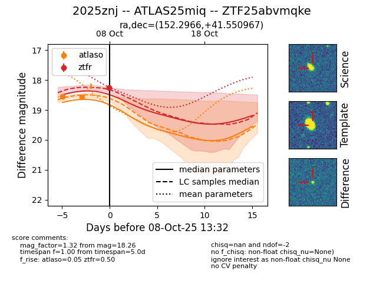
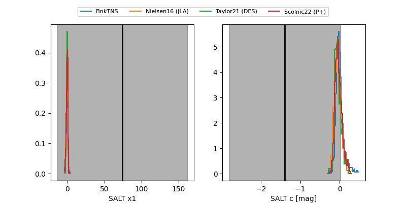

FINK: ZTF25abvmqke
Lasair: ZTF25abvmqke
ALeRCE: ZTF25abvmqke
TNS: 2025znj
YSE: 2025znj
ZTF25abvmqke (ztf,fink)
2025znj (tns,yse)
ATLAS25miq (atlas)
equatorial (ra, dec) = (152.2966,+41.55097)
galactic (l, b) = (178.7037,+53.94293)


last atlaso=18.56, ztfr=18.26
2 atlaso, 1 ztfr detections